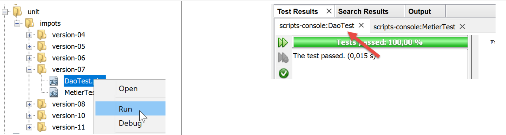

15. 应用练习 – 第7版

15.1. 实现
在此，我们将通过将主脚本中使用的常量移至配置文件中，重新审视第 6 版。该配置文件将是一个 JSON 文件，内容如下：
{
"rootDirectory": "C:/Data/st-2019/dev/php7/poly/scripts-console/impots/version-07",
"databaseFilename": "Data/database.json",
"taxAdminDataFileName": "Data/taxadmindata.json",
"taxPayersDataFileName": "Data/taxpayersdata.json",
"resultsFileName": "Data/results.json",
"errorsFileName": "Data/errors.json",
"dependencies": {
"BaseEntity": "/../version-05/Entities/BaseEntity.php",
"TaxAdminData": "/../version-05/Entities/TaxAdminData.php",
"TaxPayerData": "/../version-05/Entities/TaxPayerData.php",
"Database": "/../version-05/Entities/Database.php",
"ExceptionImpots": "/../version-05/Entities/ExceptionImpots.php",
"Utilitaires": "/../version-05/Utilities/Utilitaires.php",
"InterfaceDao": "/../version-05/Dao/InterfaceDao.php",
"TraitDao": "/../version-05/Dao/TraitDao.php",
"InterfaceDao4TransferAdminData2Database": "/../version-05/Dao/InterfaceDao4TransferAdminData2Database.php",
"DaoTransferAdminDataFromJsonFile2Database": "/../version-05/Dao/DaoTransferAdminDataFromJsonFile2Database.php",
"DaoImpotsWithTaxAdminDataInDatabase": "/../version-05/Dao/DaoImpotsWithTaxAdminDataInDatabase.php",
"InterfaceMetier": "/../version-05/Métier/InterfaceMetier.php",
"Metier": "/../version-05/Métier/Metier.php"
},
"dependencies4calculate": [
"BaseEntity",
"TaxAdminData",
"TaxPayerData",
"Database",
"ExceptionImpots",
"Utilitaires",
"InterfaceDao",
"TraitDao",
"DaoImpotsWithTaxAdminDataInDatabase",
"InterfaceMetier",
"Metier"],
"dependencies4transfer": [
"BaseEntity",
"TaxAdminData",
"Database",
"ExceptionImpots",
"Utilitaires",
"InterfaceDao",
"TraitDao",
"InterfaceDao4TransferAdminData2Database",
"DaoTransferAdminDataFromJsonFile2Database"]
}
在此配置中：
- 第 2 行：作为本配置文件中所有路径基准的目录；
- 第 3–7 行：应用程序中所有 JSON 文件的路径；
- 第 8–22 行：所有应用程序文件的路径，格式为 [key=>path]；
- 第 23–34 行：用于税费计算的依赖项，采用 [dependencies] 字典（第 8–22 行）中键的列表形式；
- 第 35–44 行：将 JSON 文件 [taxadmindata.json] 传输至数据库所需的依赖项，采用 [dependencies] 字典（第 8–22 行）中键的列表形式；
将税务管理数据导入数据库的脚本 [MainTransferAdminDataFromFile2PostgresSQLDatabase.php] 如下所示：
<?php
// strict adherence to declared types of function parameters
declare (strict_types=1);
// namespace
namespace Application;
// error handling by PHP
// ini_set("display_errors", "0");
//
// configuration file path
define("CONFIG_FILENAME", "../Data/config.json");
// we retrieve the configuration
$config = \json_decode(\file_get_contents(CONFIG_FILENAME), true);
// include the necessary script dependencies
$rootDirectory = $config["rootDirectory"];
foreach ($config["dependencies4transfer"] as $dependency) {
require $rootDirectory . $config["dependencies"][$dependency];
}
// definition of constants
define("DATABASE_CONFIG_FILENAME", "$rootDirectory/{$config["databaseFilename"]}");
define("TAXADMINDATA_FILENAME", "$rootDirectory/{$config["taxAdminDataFileName"]}");
//
try {
// creation of the [dao] layer
$dao = new DaoTransferAdminDataFromJsonFile2Database(DATABASE_CONFIG_FILENAME, TAXADMINDATA_FILENAME);
// data transfer to the database
$dao->transferAdminData2Database();
} catch (ExceptionImpots $ex) {
// error is displayed
print $ex->getMessage() . "\n";
}
// end
print "Terminé\n";
exit;
注释
代码与链接部分中的保持一致。唯一的区别在于第 18–26 行使用了 [config.json] 文件，而非常量；
- 第 16 行：[file_get_contents] 函数将 [config.json] 文件转换为字符串。随后 [json_decode] 函数利用该字符串构建 [$config] 字典。[json_decode] 函数的第二个参数 [true] 表示我们希望构建一个字典；
- 第 19–22 行：我们引入了脚本所需的依赖项，以便将 [taxadmindata.json] 文件中的数据传输到数据库；
- [$config["dependencies4transfer"]] 是传输脚本所需的依赖项数组。它是一个键列表。项目中需包含的文件路径位于 [$config["dependencies"]] 字典中；
- $config["rootDirectory"] 表示待引入文件必须前缀的路径；
同样地，税费计算脚本变为如下所示 [MainCalculateImpotsWithTaxAdminDataInPostgresDatabase]：
<?php
// strict adherence to declared types of function parameters
declare (strict_types=1);
// namespace
namespace Application;
// error handling by PHP
// ini_set("display_errors", "0");
//
// configuration file path
define("CONFIG_FILENAME", "../Data/config.json");
// we retrieve the configuration
$config = \json_decode(\file_get_contents(CONFIG_FILENAME), true);
// include the necessary script dependencies
$rootDirectory = $config["rootDirectory"];
foreach ($config["dependencies4calculate"] as $dependency) {
require $rootDirectory . $config["dependencies"][$dependency];
}
// definition of constants
define("DATABASE_CONFIG_FILENAME", "$rootDirectory/{$config["databaseFilename"]}");
define("TAXPAYERSDATA_FILENAME", "$rootDirectory/{$config["taxPayersDataFileName"]}");
define("RESULTS_FILENAME", "$rootDirectory/{$config["resultsFileName"]}");
define("ERRORS_FILENAME", "$rootDirectory/{$config["errorsFileName"]}");
//
try {
// creation of the [dao] layer
$dao = new DaoImpotsWithTaxAdminDataInDatabase(DATABASE_CONFIG_FILENAME);
// creation of the [business] layer
$métier = new Metier($dao);
// tax calculation in batch mode
$métier->executeBatchImpots(TAXPAYERSDATA_FILENAME, RESULTS_FILENAME, ERRORS_FILENAME);
} catch (ExceptionImpots $ex) {
// error is displayed
print "Une erreur s'est produite : " . utf8_encode($ex->getMessage()) . "\n";
}
// end
print "Terminé\n";
exit;
15.2. 测试 [Codeception]
与之前的版本一样，此版本也通过了 [Codeception] 测试的验证。

15.2.1. [DAO] 层测试
[DaoTest.php] 测试内容如下：
<?php
// strict adherence to declared function parameter types
declare (strict_types=1);
// namespace
namespace Application;
// defining constants
define("ROOT", "C:/Data/st-2019/dev/php7/poly/scripts-console/impots/version-07");
// configuration file path
define("CONFIG_FILENAME", ROOT."/Data/config.json");
// we retrieve the configuration
$config = \json_decode(\file_get_contents(CONFIG_FILENAME), true);
// include the necessary script dependencies
$rootDirectory = $config["rootDirectory"];
foreach ($config["dependencies4calculate"] as $dependency) {
require $rootDirectory . $config["dependencies"][$dependency];
}
// other constants
define("DATABASE_CONFIG_FILENAME", "$rootDirectory/{$config["databaseFilename"]}");
// test -----------------------------------------------------
class DaoTest extends \Codeception\Test\Unit {
// TaxAdminData
private $taxAdminData;
public function __construct() {
parent::__construct();
// creation of the [dao] layer
$dao = new DaoImpotsWithTaxAdminDataInDatabase(DATABASE_CONFIG_FILENAME);
$this->taxAdminData = $dao->getTaxAdminData();
}
// tests
public function testTaxAdminData() {
…
}
}
评论
- 第 9–21 行：测试环境的定义。我们使用与链接部分中描述的主脚本 [MainCalculateImpotsWithTaxAdminDataInPostgresDatabase] 相同的环境，但不包含 [business] 层；
- 第 29–34 行：构建 [dao] 层；
- 第 33 行：[$this→taxAdminData] 属性包含待测试的数据；
- 第 37–39 行：[testTaxAdminData] 方法即链接部分中所述的方法；
测试结果如下：

15.2.2. [业务]层测试
[MetierTest.php] 的测试内容如下：
<?php
// strict adherence to declared types of function parameters
declare (strict_types=1);
// namespace
namespace Application;
// defining constants
define("ROOT", "C:/Data/st-2019/dev/php7/poly/scripts-console/impots/version-07");
// configuration file path
define("CONFIG_FILENAME", ROOT . "/Data/config.json");
// we retrieve the configuration
$config = \json_decode(\file_get_contents(CONFIG_FILENAME), true);
// include the necessary script dependencies
$rootDirectory = $config["rootDirectory"];
foreach ($config["dependencies4calculate"] as $dependency) {
require $rootDirectory . $config["dependencies"][$dependency];
}
// other constants
define("DATABASE_CONFIG_FILENAME", "$rootDirectory/{$config["databaseFilename"]}");
// test class
class MetierTest extends \Codeception\Test\Unit {
// business layer
private $métier;
public function __construct() {
parent::__construct();
// creation of the [dao] layer
$dao = new DaoImpotsWithTaxAdminDataInDatabase(DATABASE_CONFIG_FILENAME);
// creation of the [business] layer
$this->métier = new Metier($dao);
}
// tests
public function test1() {
…
}
-----------------------------------
public function test11() {
…
}
}
评论
- 第9–21行：测试环境的定义。我们使用与链接部分中描述的主脚本[MainCalculateImpotsWithTaxAdminDataInPostgresDatabase]相同的环境；
- 第 28–34 行：构建 [dao] 层；
- 第 33 行：属性 [$this→business] 是对待测试的 [business] 层的引用；
- 第 37–45 行：方法 [test1, test2…, test11] 即链接部分中所述的方法；
测试结果如下：